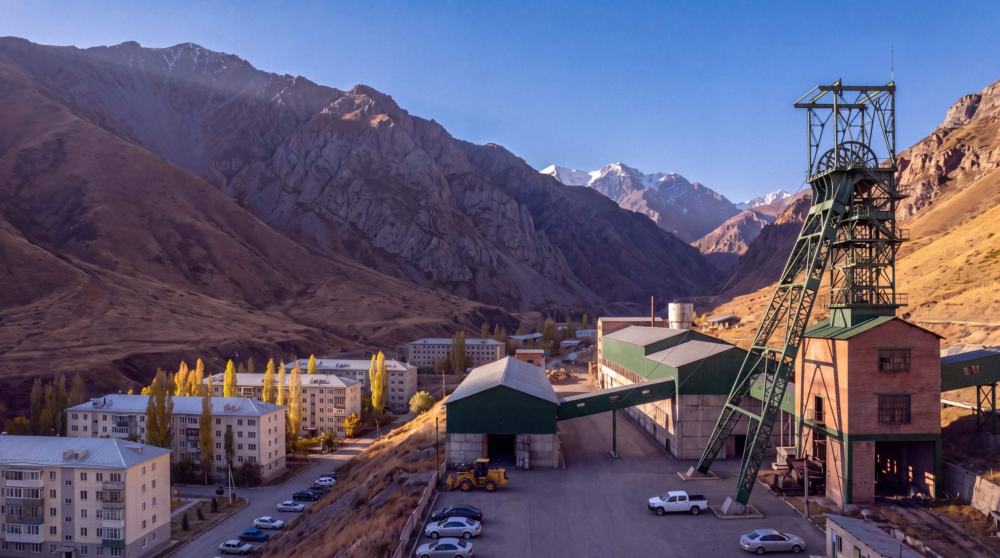

The Sary-Bulak Antimony Works (SBAW) operates an underground stibnite mine and a flotation mill in the Sary-Bulak Gorge in the foothills of the Talas Alatau, at about 1,650 m above sea level and about 20 km south-south-west of Talas. It is the mining subsidiary of the Combine and the largest employer in Sary-Bulak District.
Key data
| Item | Details |
|---|---|
| Deposit | Stibnite in quartz veins and breccia bodies along a fault zone in Palaeozoic limestone and shale |
| Access | Shaft No. 1 "Pioneer" (1961); Shaft No. 2 "Severny" (1970s); "Central" incline (early 2000s) |
| Depth of workings | about 750 m below surface |
| Mining methods | Cut-and-fill and sublevel stoping |
| Ore treated | about 350,000 t a year |
| Average head grade | about 3% Sb |
| Concentrate | 55 to 60% Sb |
| Employees | about 2,300 |
Mining and processing
Ore is hoisted to the surface in skips through the two shafts and hauled by truck up the Central incline. At the mill it is crushed and ground, and froth flotation separates the stibnite into a concentrate. Most of the concentrate is sent by road and rail to the Chatkal Chemical Smelting Complex. The rest is sold as concentrate and shipped by rail through Kazakhstan.
History
Construction began in 1958 and Shaft No. 1 was commissioned in 1961. Shaft No. 2 was sunk and the mill enlarged under the 1971 Antimony Expansion Directive. In 1992 power cuts halted the dewatering pumps and the lower levels of Shaft No. 2 flooded. They were pumped out between 1995 and 1997, when the mine was re-equipped with new loaders and drilling rigs.
Since 2024 the works have been preparing to deepen the Central incline and to reopen worked-out levels. See Sary-Bulak Deep Levels Restart.
Rudnik settlement
Most employees live in the works settlement beside the mine, known as Rudnik, with about 5,000 inhabitants, a school, a polyclinic and a house of culture. The settlement has a Syro-Iradi parish church, opened in 1995, and a Russian Orthodox chapel. Workers from the villages of the Talas valley travel by company bus.